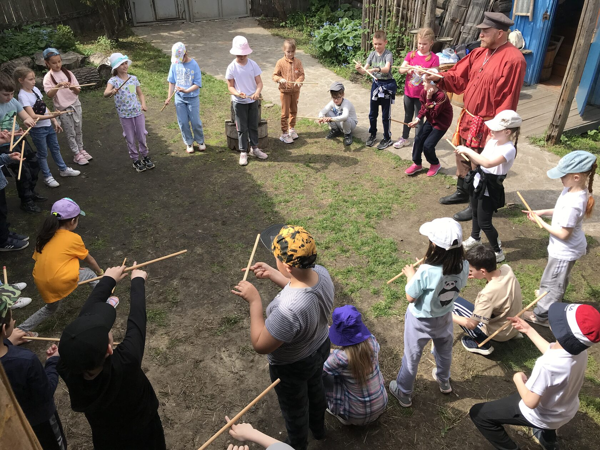

8:00 Подъем
9:00 Завтрак
10:00 Трансфер до
с. Насекина. Ул. Центральная д.7 «Музей истории крестьянского быта»

10:15 Мастер-класс по истории крестьянского быта.
12:00 Крестьянский обед

13:00 Трансфер до Кулига-парка
14:00 Сдача домиков.
14:30 Выезд до г. Тюмень ул. Республики д. 142 ГАУ ТО "Западно-Сибирский
инновационный центр", Тюменский ТЕХНОПАРК.